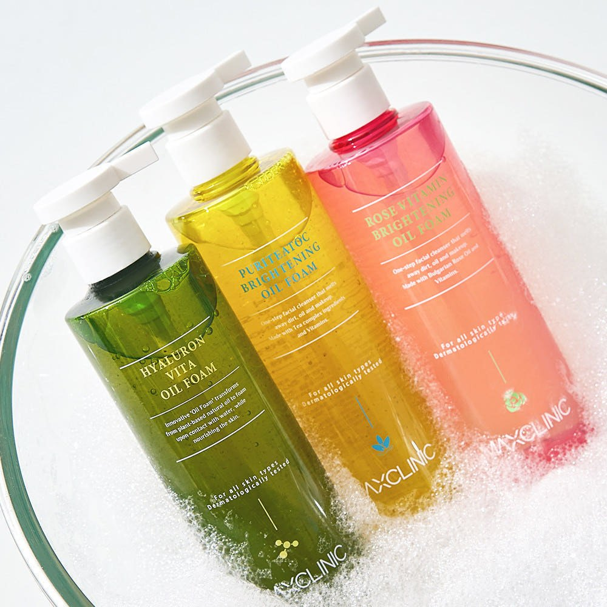
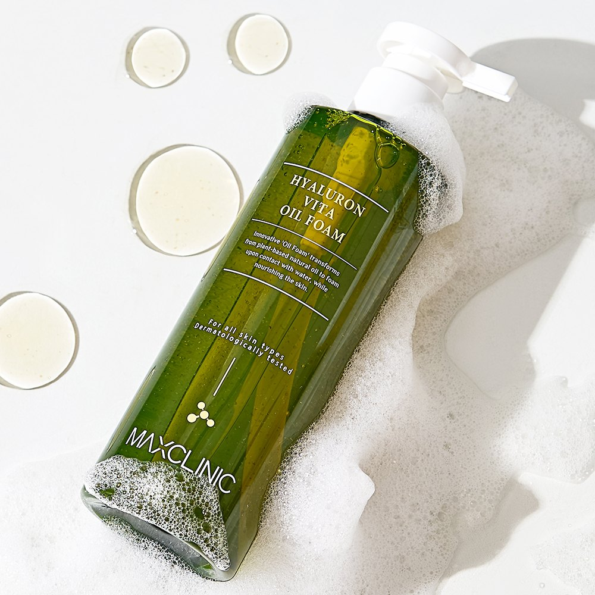
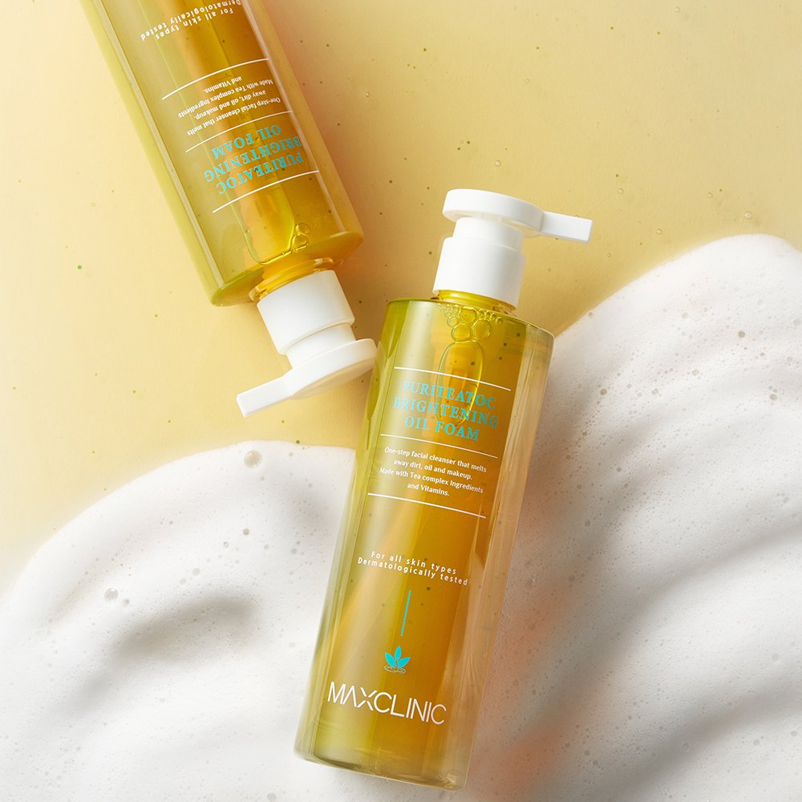
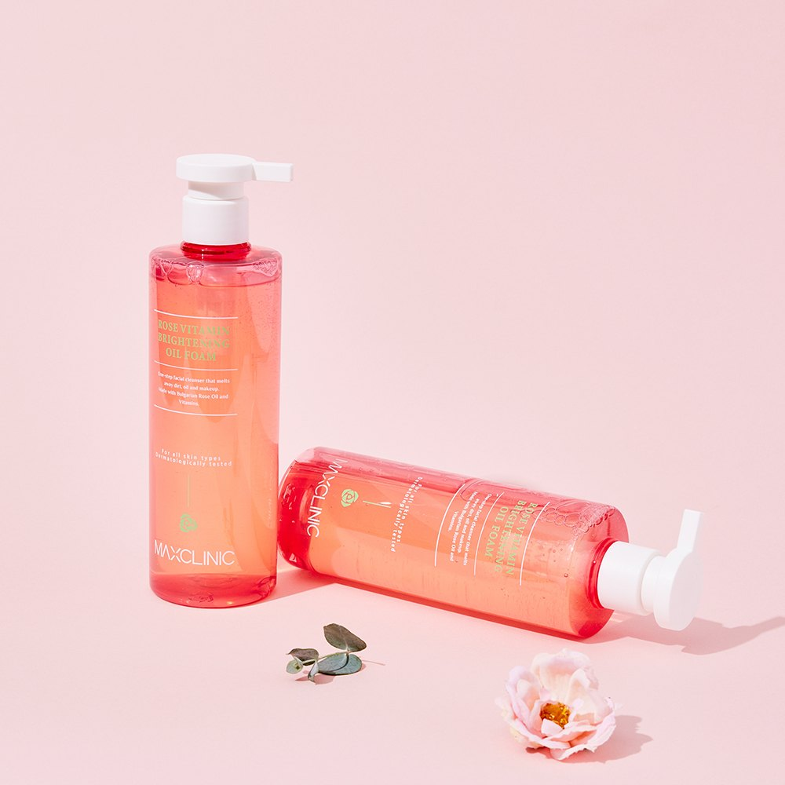

Maxclinic Oil Foam Cleanser Review at a Glance
In this Maxclinic Oil Foam Cleanser review, we look at the Korean "reversal cleanser" (반전클렌저) that starts as a cleansing oil and ends as a foam. Maxclinic sells it in Korea as a large 310g pump bottle, often as a 1+1 deal. The idea is simple: one product replaces the usual oil cleanser plus foam cleanser double cleanse.
The Korean listing says it melts makeup, removes sunscreen and eye makeup in one go, and doesn't leave skin feeling tight after rinsing. Maxclinic also says the cleansing ingredients are 100% naturally derived. That's a brand claim, so we can't verify it ourselves.


How to Use: The Oil-to-Foam Switch
The label on the green bottle explains it best: the formula changes from a plant-based oil into foam when it meets water. In practice, that gives you two stages in one product.
- Dry stage: Pump the oil onto dry hands and massage it over a dry face to break down makeup and sunscreen.
- Add water: Wet your hands and keep massaging. The oil turns into a soft foam.
- Rinse: Rinse well with lukewarm water. There's no second cleanser to reach for.
Korean users say skin feels clean but not stripped afterward. That makes it a good fit for anyone who finds a two-step routine tedious at night.


Three Bottles Compared
The photos show three bottle colors. Here's what the labels say. We don't have the full ingredient lists, so check the back label before you buy.
| Bottle | What the Label Says | Good to Know |
|---|---|---|
| 🟢 Hyaluron Vita Oil Foam | Plant-based oil that turns to foam with water, while nourishing the skin. For all skin types. Dermatologically tested. | The all-rounder pick. |
| 🟡 Puritea TOC Brightening Oil Foam | One-step facial cleanser that melts away dirt, oil and makeup. Made with a tea complex and vitamins. | Brightening-focused version. |
| Rose Vita Oil Foam (pink) | Same oil-to-foam format in a pink bottle. | Check the label for its focus and ingredients. |
| Size (Korean listing) | Large 310g pump bottle, often sold 1+1 | US sizes and bundles may differ. |
Pros & Cons
✅ Pros
- Replaces an oil cleanser and a foam cleanser with one bottle.
- The listing says it handles makeup, sunscreen and eye makeup in one go.
- Users say there's no tight feeling after rinsing.
- Big 310g pump bottle lasts a long time.
⚠️ Cons
- The "100% naturally derived" cleansing claim comes from the brand and isn't independently verified here.
- We don't have the full ingredient lists, so sensitive skin should check the label and patch test.
- US Amazon listings may not carry the same version or size.
Who It Suits (and Who Should Skip It)
- Great for: Anyone who wears sunscreen or light makeup daily and wants a quick, one-bottle night cleanse.
- Great for: Travelers who want one cleanser in the bag instead of two.
- Maybe skip: If you love a very gentle oil-only cleanse, or if you need a specific waterproof eye-makeup remover.
- Check first: If you react easily to fragrance or plant oils, read the ingredient list on the bottle.
Maxclinic Oil Foam FAQ
How do you use the Maxclinic Oil Foam Cleanser?
Pump it onto dry hands and massage it over a dry face as an oil to melt makeup and sunscreen. Then add a little water and keep massaging. It turns into foam, so you can rinse it off without a second cleanser.
Does the Maxclinic Oil Foam remove sunscreen and eye makeup?
The Korean listing says it removes sunscreen and eye makeup in one step. Avoid getting it in your eyes, and use a dedicated remover if you wear heavy waterproof mascara.
Is it suitable for all skin types?
The green Hyaluron Vita bottle is labeled for all skin types and dermatologically tested. If your skin is sensitive, check the full ingredient list on the bottle and patch test first.
How big is the bottle?
The Korean listing we reviewed sells a large 310g bottle, often as a 1+1 deal. US Amazon sizes and bundles may be different.
Maxclinic Oil Foam Cleanser
Oil-to-foam · One-step cleanse · Large pump bottle